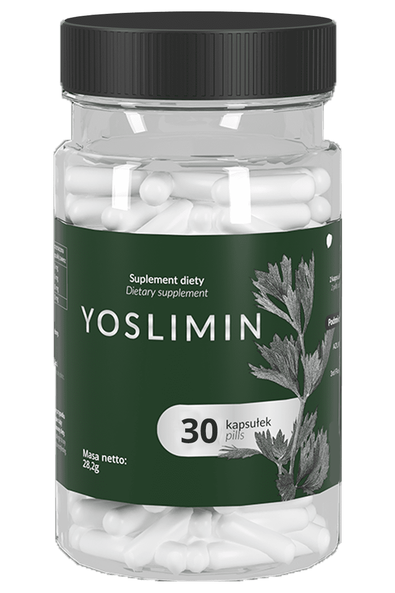

Nie spotkałam nic lepszego na zrzucenie brzuszka
"Odchudzam się praktycznie od zawsze. Czego to ja nie stosowałam... Diety dukana, diety keto, ćwiczenia, suplementy diety i głodówki. Przeszłam dosłownie przez to wszystko tylko po to, żeby za każdym razem ponosić porażkę. Wszyscy u mnie w rodzinie są otyli, w dodatku mam problemy z tarczycą. Nie potrafiłam się pogodzić ze swoją figurą więc poszukałam pomocy za granicą. Dołączyłam do grupy na facebooku gdzie ludzie zachwycali się Yosliminem. Zamówiłam paczkę z Wielkiej Brytanii i po tygodniu rozpoczęłam stosowanie. Pierwszy efekt był już po tygodniu, a po miesiącu zrzuciłam -11kg! Popłakałam się ze szczęścia... Stosuje dalej i nie mogę się doczekać efektów końcowych
Witaj w moim centrum,
Nazywam się Janina Stoch i jestem specjalistką ds. spalania tkanki tłuszczowej oraz zbijania wagi w trudnych przypadkach. Współpracuję bezpośrednio z producentem tego wyjątkowego produktu, i powiem otwarcie, że przez 30 lat mojej kariery nie spotkałam czegoś równie skutecznego w redukcji tkanki tłuszczowej.
Badania w laboratorium producenta pod kątem bezpiecznego zrzucania wagi prowadzone były już od lat 70, aby pomóc w utrzymaniu wagi osobom z problemami motorycznymi tj. po amputacjach lub weteranów, którzy utracili zdoloność do samodzielnego poruszania się.
Wiele lat zajęło naukowcom, aby pogodzić skuteczność z bezpieczeństwem, aż w końcu zaowocowało to rewolucyjną formułą Yoslimin. Udało się stworzyć coś, co bezlitośnie likwiduje nadmiar tłuszczu w organiźmie, jak i wzmacnia układ odpornościowy i dodaje sił witalnych.
Osobiście pracuje z tym produktem już prawie 10 lat, i bez wahania polecam go swoim najbliższym. Na polskim rynku można go nabyć od niedawna, natomiast Ameryka jak i zachód Europy, korzysta z jego wspaniałego działania już długi czas.
Znowu chce mi się żyć!
Otyłość nie dawała mi spokoju. Roztyłem się od momentu kiedy rozpocząłem pracę jako taksówkarz. Przytyłem prawie 40kg! Na szczęście po 3 miesiącach stosowania Yoslimin schudłem 27kg i dalej leci! Gorąco polecam
Andrzej B., 43 lat
Serkret tkwi w prostocie składu. Yoslimin jest w 100% naturalny przez co w 100% bezpieczny dla każdego! Wystarczy regularne stosowanie produktu, aby tłuszcz automatycznie znikał z naszego ciała.
Rekordowy wynik, jakim byłam świadkiem, osiągnęła moja 63-letnia podopieczna, które w zaledwie 3 miesiące, zrzuciła 31 kilogramów! To był prawdziwy cud, ponieważ spadek wagi miał miejsce mimo wyciętej tarczycy i braku ruchu spowodowany zapaleniem stawów.
Nawet przy tak poważnych problemach zdrowotnych, można zauważyć:
- Przyspieszenie mebabolizmu o 76%!
- Automatyczną redukcję wagi
- Znaczne zmniejszenie chęci do podjadania
- Diametralne wzmocnienie organizmu
- Zanik celluitisu wodnego
- Poprawa kondycji cery, włosów i paznokci
- Spadek pierwszych kilogramów już po kilku dniach
To wszystko naprawdę jest możliwe! Dzięki dopracowanej i niezawodnej formule, kilogramy może gubić praktycznie każdy! Moi podpieczni to bardzo często młode mamy, mężczyźni którzy nie mają czasu na ćwiczenia, kobiety po menopauzie, dosłownie każdy! 10 lat praktyki utwierdziło mnie, że metodę jaką stosuje nie ma sobie równych! Wystarczą dwie kapsułki dziennie...
Brakowało mi nadzieji
Z brzuchem miałam problem prkatycznie od zawsze. Próbowałam siłowni i innch praktyk fizycznych, ale to nie dawało skutku bo nadrabiałam w kuchni... Dzięki Yoslimin moje łaknienie udało się opanować, a metabolizm przyspieszył do tego stopnia, że schudła -17kg bez czasochłonnych ćwiczeń. Stosuje cały czas profilaktycznie, bo mam tendencje do tycia. Środek warty polecenia!
Ania, 42 lat
PRZYSPIESZA METABOLIZM
W skład Yoslimin wchodzi m.in. błonnik jabłkowy, który doskonale pobudza perystaltyke jelit oraz cały układ trawienny. Likwiduje on uczucie pełności i pomaga przetrawić najcięzsze potrawy
REDUKUJE TKNAKĘ TŁUSZCZOWĄ
Drugim składnikem produktu jest Seler, który w ostatnim czasie został okrzyknięty królem antyoksydantów oraz naturalnym spalaczem tłuszczu! Regularne uzupełnianie organizmu o ten składnik jest kluczem do sukcesu w spalaniu tkanki tłuszczowej!
WZMACNIA ODPORNOŚĆ ORGANIZMU
Trzecim i ostatnim składnikiem Yoslimin jest korzeń imbiru. Każdy doskonale zna jego lecznicze i wzmacniające właściwości. Wszystkie trzy składniki spreparowane sekretną formułą producenta, tworzą tarczę dla naszej odporności.
Zdarzył się cud
"Moje problemy rozpoczęły się po operacji usunięcia tarczycy. Zaczęłam tyć dosłownie z powietrza! Potrafiłam nie jeść cały dzień, a waga i tak rosła... Zrzucanie wagi tradycyjnymi metodami nie wchodziło w grę, ponieważ cierpiałam na RZS (Reumatoidalne Zapalenie Stawów). Każdy mocniejszy ruch, sprawiał mi ból, a po przybraniu na wadzę, było to jeszcze bardziej odczuwalne. Na szczęście na swojej drodzę trafiłam na Panią Janinę, która zaleciła mi Yoslimin. Od tamtej pory wszystko się zmieniło. Czułam się doskonale, a waga leciała w dół jak szalona! Jestem zachwycona efektami, jakie udało mi się osiągnąć! Serdeczenie polecam każdemu
WYOBRAŹ SOBIE, ŻE TWÓJ ZWISAJĄCY BRZUSZEK ZNIKA I CZUJESZ SIĘ DOSKONALE! MIEŚCISZ SIĘ W SWOJE ULUBIONE CIUCHY I IDZIESZ NA PLAŻĘ BEZ WSTYDU O SWOJĄ SYLWETKĘ
Producent jest na tyle pewny skuteczności produktu, że daję 100% gwarancji efektów...
Gwarancja zwrotu pieniędzy
Jeżeli z jakiegokolwiek powodu będziesz niezadowolony z działania naszego produktu, nie pozbędziesz się brzuszka albo nie osiągniesz zamierzonego celu odeślij nam komplet opakowań, a my zwrócimy pieniądze.
Jak najtaniej zamówić Yoslimin?
Formuła Yoslimin dostępna jest w Polsce od niedawna, a już są problemy z jej dostępnością. Na oficjalych stronach cena przekracza 300zł za pół miesiąca kuracji... Z racji tego, że współpracuje bezpośrednio z producentem, możesz zamówić produkt z moją specjalną zniżka:
Certyfikowany i skuteczny środek odchudzający w JEDNORAZOWYM rabacie kosztuje 347 zł 147 zł
Jutro ta cena może być dużo wyższa...
Niezbędna uwaga
Uważaj na podróbki i tanie zmamienniki. Tylko na tej stronie, z moją specjalną zniżką, zamówisz 100% oryginalny produkt, w wyjątkowej cenie.
Kliknij w "Dodaj do koszyka" i wypełnij formularz na dole strony. Kuracja Yoslimin trafi w Twoje ręce po 2-3 dniach roboczych. Potem już Ty oceniasz. Jeśli nie będziesz w 100% zadowolony, po prostu wyślij opakowanie po produkcie na adres zwrotny, a w odpowiedzi otrzymasz zwrot pieniędzy - bez zadawania pytań.
Cięzko było z brzuszkiem
Jestem mechanikiem samochodowym i duży brzuch bardzo mi przeszkadzał w pracy. Żeby wejść pod samochód albo schylić się po klucz nasadowy to był nie lada kłopot... Podczas rozmowy ze stałym klientem, usłyszałem o tym cudownym środku i postanowiłem spróbować. Jestem zachwycony do tego stopnia, że mojemu klientowi auto naprawiam gratis! Polecam każdemu!
Paweł Z., 32 lata
Ja osobiście jestem pewna, że w strone gwarancji nawet nie spojrzysz. Zdumiewające efekty powalą Cię na kolana i rozpoczniesz nowe, lżejsze życie!

347 zł
147 zł
Jutro promocja przepada.
PS. Przypominam Ci, że promocja kończy się dzisiaj.
PS2. Pamiętaj, że każde zamówienie objęte jest 30-dniową gwarancją satysfakcji.